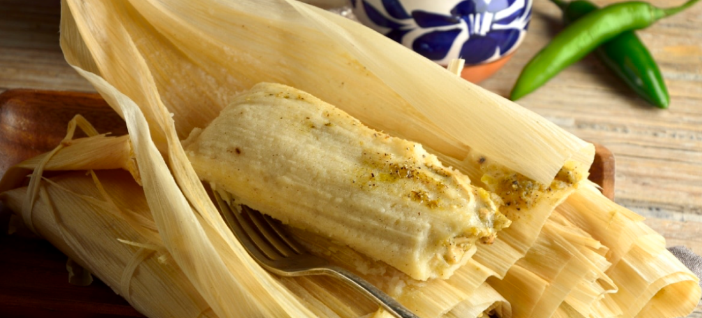
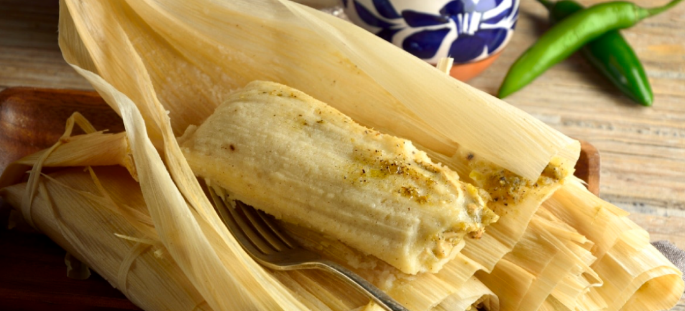

"Sabores tradicionales, pedidos modernos: Delicias de maíz al alcance de tu mano."
Preguntas frecuentes
Sí, puedes hacer pedidos en línea a través de nuestro sitio web. Simplemente selecciona los tamales que deseas y agrega al carrito de compras.
El tiempo de entrega puede variar dependiendo de tu ubicación. Generalmente, nuestros pedidos son entregados en un plazo de 30 a 90 minutos.
Sí, de momento usamos PayPal para pagos con tarjeta de crédito y débito, y buscamos añadir otras opciones. También ofrecemos opciones de pago en efectivo al momento de la entrega.
Sí, entregamos los tamales a domicilio. Nuestra empresa cuenta con equipos de transporte para llegar hasta la puerta de su hogar.
Nuestro servicio de envío cubre actualmente la alcaldía Benito Juárez, pero estamos buscando expandirnos a otras alcaldías próximamente.
 
